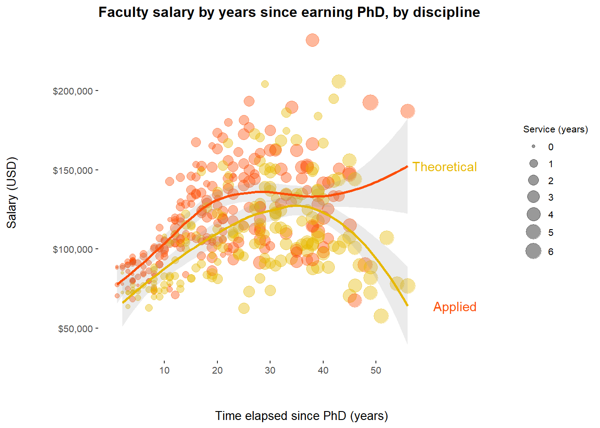
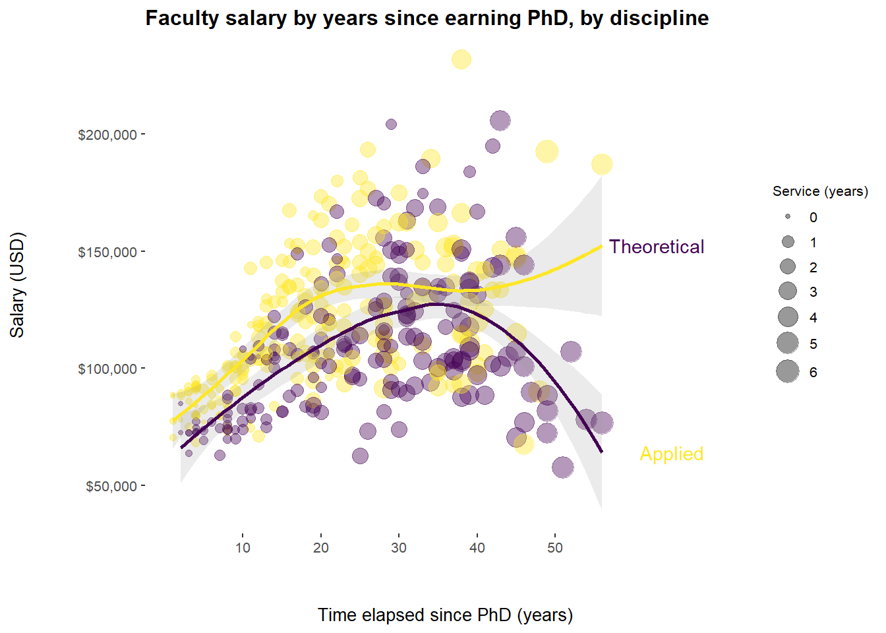
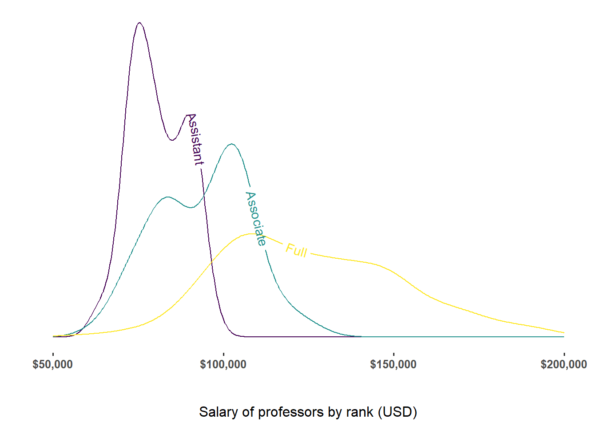

library(ggplot2)
library(ggthemes)
library(ggrepel)
library(dplyr)
library(tidyr)
library(viridis)
library(geomtextpath)My ggplot2 plots - Ramzi Farhat
Hi,
I enjoyed producing the two graphs. I still have a couple of technical issues outstanding:
I ask R to generate a pdf for salary_experience_custom, but it’s not generated for some reason.
Direct labeling on Plot 1 is switched around. Tried a few things, but to no avail.
Thanks for any tips!
Data - Faculty salaries
The data is faculty salaries at a college from the carData package. The variables included are rank (assistant, associate, or full professor), discipline (theoretical or applied), years since obtaining PhD , years since starting service at the college, sex, and salary.
data(Salaries, package="carData")Salaries$yrs.service <- as.numeric(Salaries$yrs.service)
levels(Salaries$discipline) <- list(Theoretical = "A", Applied = "B")
head(Salaries) rank discipline yrs.since.phd yrs.service sex salary
1 Prof Applied 19 18 Male 139750
2 Prof Applied 20 16 Male 173200
3 AsstProf Applied 4 3 Male 79750
4 Prof Applied 45 39 Male 115000
5 Prof Applied 40 41 Male 141500
6 AssocProf Applied 6 6 Male 97000Plot 1 - Faculty Salary by years since PhD
For the first plot, I plotted salary against years elapsed since earning PhD degree. The data points are further color coded by whether the faculty member is in a theoretical or applied field, and the size reflects years of service.
The data shows an increasing trend in salary as years elapsed since earning PhD degree increase, up to a certain point. The largest increases are in the first 20 years.
The data shows that those in applied fields make more money than those in theoretical fields
For those in theoretical fields, older faculty members who have been promoted to full professor and who started at lower salaries could not negotiate raises as could younger professors negotiate higher starting starting salaries.
Years of service to the university is reasonably correlated with time since PhD in predicted salary, but more faculty in theoretical fields joined the university later after earning their PhDs, and they were still able to start at comparable salaries.
myColors <- c("#E7B800", "#FC4E07")
p_ps <- ggplot(data = Salaries, mapping = aes(x = yrs.since.phd,
y = salary,
color=discipline)) +
geom_point(aes(size=yrs.service/10),
alpha=0.4) +
geom_smooth(method = "loess", alpha=0.2) +
theme_tufte(base_size=10,
base_family = "sans") +
scale_color_manual(values=myColors) +
ylab("Salary (USD)") +
xlab("Time elapsed since PhD (years)") +
scale_x_continuous(breaks = seq(10, 50, by = 10)) +
scale_y_continuous(labels = scales::dollar_format()) +
theme(axis.title.x = element_text(margin = margin(t = 30))) +
theme(axis.title.y = element_text(margin = margin(r = 30))) +
guides(size=guide_legend(title="Service (years)"),
color="none") +
theme(legend.position = "right") +
theme(legend.text = element_text(size=8)) +
theme(legend.title = element_text(size=8)) +
theme(legend.key.size = unit(0.5, 'cm')) +
ggtitle("Faculty salary by years since earning PhD, by discipline") +
theme(plot.title = element_text(face = "bold"))Plot 1a - custom HEX colors
For this plot, I use my own HEX color palette, in addition to:
-color coding by discipline -size coding by years of service
-using a Tufte theme -increasing the distance between labels and scales.
-using dollar format -changing legend size and position -reducing smoothing CI opacity -direct labeling
# find end of lines
line_ends <- ggplot_build(p_ps)$data[[2]] %>%
group_by(colour) %>%
filter(x==max(x))
#add discipline label
line_ends$discipline <- Salaries %>% pull(discipline) %>%
unique() %>%
as.character() %>%
sort()
# add direct labels to graph
p_ps_experience_custom <- p_ps + ggrepel::geom_label_repel(data = line_ends,
aes(x = 15+line_ends$x, y = line_ends$y,
label = discipline,
min.segment.length = unit(0, 'lines')),
nudge_x = 1,
label.size=NA,
fill = alpha(c("white"),0)) p_ps_experience_custom
pdf("salary_experience_custom", height=4, width=8)
print(p_ps_experience_custom)Plot 1b - Veridis colors
For this plot, I use a Veridis color palette, in addition to:
-color coding by discipline
-size coding by years of service
-using a Tufte theme -increasing the distance between labels and scales.
-using dollar format -changing legend size and position
-reducing smoothing CI opacity
-direct labeling
p_ps_experience_veridis <- p_ps_experience_custom + scale_color_viridis(discrete = TRUE)
p_ps_experience_veridis
pdf("salary_experience_veridis.pdf", height=4, width=8)
print(p_ps_experience_veridis)Plot 2 - Faculty Salary by rank
This second plot is a salary density plot for three different professorial ranks. On average, full professors make more than associate professors, and associate professors more than assistant professors. The salaries of assistant professors are more tightly distribution around the median for the group, than those of associate professors, and full professors, progressively.
For this density plot, I
-color code by rank
-use a Tufte theme
-increase the distance between labels and scales.
-use dollar format
-direct label
levels(Salaries$rank) <- list(Assistant = "AsstProf", Associate = "AssocProf",
Full = "Prof")
p_ps_den <- Salaries %>%
ggplot(aes(x = salary,
color = rank,
label = rank)) +
geom_textdensity() +
theme_tufte(base_size = 12, base_family = "sans") +
scale_color_viridis(discrete = TRUE) +
scale_fill_viridis(discrete = TRUE) +
theme(legend.position = "bottom") +
xlab("Salary of professors by rank (USD)") +
theme(axis.text.y=element_blank(),
axis.ticks.y=element_blank()) +
theme(axis.title.x = element_text(margin = margin(t = 30))) +
guides(color="none") +
theme(axis.title.y = element_text(colour = "white")) +
theme(axis.text.x = element_text(face="bold")) +
scale_x_continuous(limits = c(50000, 200000), labels = scales::dollar_format())p_ps_den
pdf("salary_rank.pdf", height=4, width=6)
print(p_ps_den)